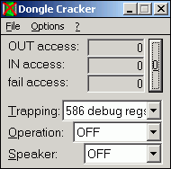

{kind=link}
Old-style solution⚓
This program can redirect the port accesses for you, and does it universally for all known cases (DOS Box, Win16, Win32, VxD, other kernel-mode driver) in kernel mode.
The bad news: Currently, this software runs on Windows 3.1 (Enhanced Mode), 3.11, 95, 98, Me, NT 3.51, NT4, 2000. But not on XP and newer. Not on SMP machines. ECP and EPP parallel port extensions are not supported.
This program, written for a completely other purpose, has to be set-up as follows:
- Trapping: „586 debug register“ or „386 IOPM Table“
- Operation: „OFF“
- Speaker: what you want
- Load and start driver at startup: ON if you don't want to run this program everytime you need redirection
- Main address: Emulation at [LPT1]: Address you want
- Modify: Physical address: Address you have (see Device Manager)
It is a 16-bit program, but you won't see that. It's open-source. Look at the nice screenshots below:


This kind of port access redirection is quite fast, so you can run high-speed parallel port devices like JTAG programmers and oscilloscopes, in opposite to the more amazing USB2LPT device.